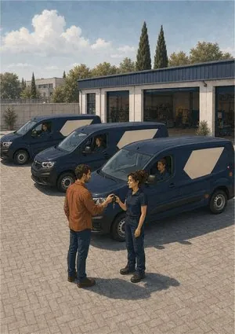
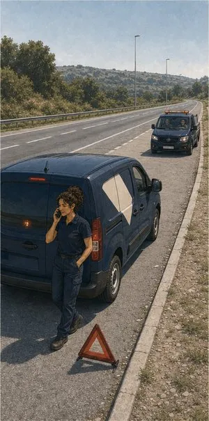
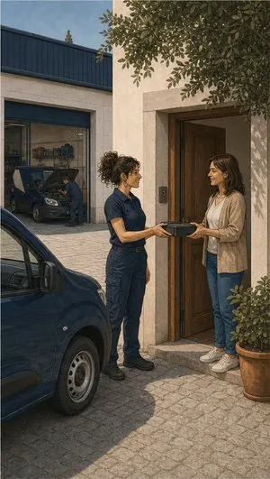
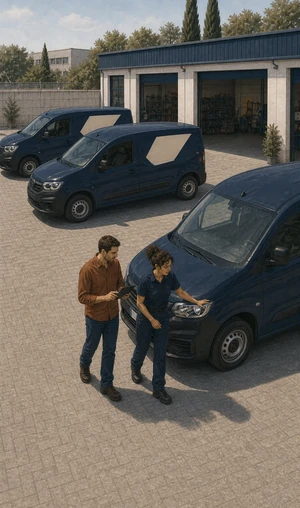

Automóvel e frotas
Gerir apólices soltas custa mais em tempo do que em prémio. Acima de dez veículos há apólice de frota; abaixo disso, Auto Empresas.
O que pode incluir
Uma renovação.
Um interlocutor.
Numa apólice de frota, os veículos podem passar a ter a mesma data de renovação, condições negociadas em conjunto e entradas e saídas mais simples. O que fica acordado consta da proposta e da apólice.
Responsabilidade civil obrigatória
Para todos os veículos da frota, com o mesmo enquadramento legal de qualquer apólice automóvel.
Danos próprios por veículo
Pode aplicar-se apenas às viaturas mais recentes, mantendo as antigas só com o obrigatório.
Furto, roubo e incêndio
Especialmente relevante em comerciais que pernoitam fora de instalações fechadas.
Assistência em viagem alargada
Reboque e viatura de substituição dimensionados à imobilização de um veículo de trabalho.
Proteção dos ocupantes
Cobre condutor e passageiros, independentemente de quem vai ao volante nesse dia.
Mercadoria transportada
Cobertura autónoma para o que segue dentro da carrinha, que o seguro automóvel não cobre.
Gestão de entradas e saídas
Veículos novos entram e os vendidos saem com um simples aviso, sem contrato novo de cada vez.




Sem letra pequena
Onde a cobertura
acaba.
Uma leitura geral, para chegar à conversa com ideias claras. Cada apólice tem as suas condições — e lemo-las consigo.
Ver o que está e o que não está coberto lista indicativa
Normalmente coberto
- Responsabilidade civil de todos os veículos identificados na apólice.
- Coberturas facultativas diferenciadas por veículo, conforme idade e valor.
- Assistência e reboque adaptados a comerciais e pesados.
- Ocupantes, seja quem for o condutor autorizado nesse dia.
- Entradas e saídas de viaturas durante a vigência, por simples comunicação.
Normalmente excluído
- Condutores não habilitados para a categoria do veículo.
- Utilização fora do âmbito declarado, como transporte público não previsto.
- Mercadoria transportada, salvo cobertura específica contratada.
- Álcool ou estupefacientes acima dos limites legais.
- Sobrecarga e utilização em desconformidade com a homologação.
- Coimas de trânsito, que continuam a cargo da empresa ou do condutor.
Para quem
Distribuição e entregas
Muitos quilómetros diários e paragens frequentes. Aqui pesam a assistência rápida e a viatura de substituição: um dia parado é um dia de rota por fazer.
Serviços técnicos ao domicílio
Carrinhas com ferramenta e material a bordo. A cobertura de mercadoria transportada e o furto de conteúdo são o que realmente falta na maioria das apólices.
Frota mista
Ligeiros de passageiros para comerciais, comerciais para obra, um pesado para cargas. Cada segmento leva coberturas próprias dentro do mesmo contrato.
Informação resumida e de caráter geral. As condições que valem são as da informação pré-contratual e contratual do produto proposto.
Quem define coberturas, capitais e exclusões é a companhia. Veja a página oficial do produto e traga-nos as dúvidas.
Perguntas frequentes
As perguntas
mais frequentes.
A partir de quantos veículos posso ter uma frota?
A companhia prevê a possibilidade de apólice de frota para empresas com mais de dez veículos. Abaixo desse número trabalha-se em Auto Empresas, viatura a viatura.
Seja qual for o número, fazemos a comparação com números: o que paga hoje contra a proposta que a companhia apresentar.
Posso ter coberturas diferentes em cada viatura?
Sim, e é o normal. As viaturas recentes ficam com danos próprios e as mais antigas apenas com responsabilidade civil, tudo dentro do mesmo contrato.
Comprei ou vendi um carro. O que muda?
Comunica-se a entrada ou a saída e o acerto é feito nos termos previstos na apólice. As regras concretas de comunicação e de acerto constam das condições contratadas.
Qualquer funcionário pode conduzir os carros da empresa?
Depende do regime contratado. Existe condução livre, condutor nomeado e condução exclusiva, com prémios diferentes. É um ponto que confirmamos sempre, porque é origem frequente de recusas.
A mercadoria que transporto está coberta?
Não pelo seguro automóvel. A mercadoria transportada exige cobertura própria, seja para bens da empresa, seja para bens de clientes.
Traga a lista de viaturas.
Fazemos as contas.
Ligue com as matrículas à frente. Vemos que solução se aplica ao seu caso e comparamos com o que paga hoje.
Sem compromisso. Não usamos os seus dados para mais nada.